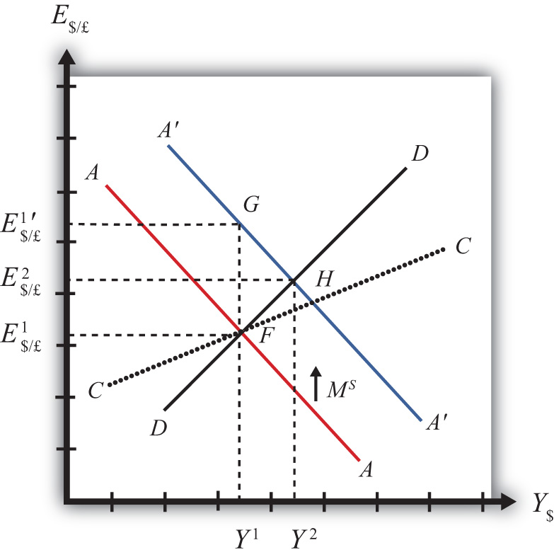

In this section, we use the AA-DD model to assess the effects of monetary policy in a floating exchange rate system. Recall from Chapter 18 "Interest Rate Determination" that the money supply is effectively controlled by a country’s central bank. In the case of the United States, this is the Federal Reserve Board, or the Fed for short. When the money supply increases due to action taken by the central bank, we refer to it as expansionary monetary policy. If the central bank acts to reduce the money supply, it is referred to as contractionary monetary policy. Methods that can be used to change the money supply are discussed in Chapter 18 "Interest Rate Determination", Section 18.5 "Controlling the Money Supply".
Suppose the economy is originally at a superequilibrium shown as point F in Figure 21.1 "Expansionary Monetary Policy in the AA-DD Model with Floating Exchange Rates". The original GNP level is Y1 and the exchange rate is E$/£1. Next, suppose the U.S. central bank (or the Fed) decides to expand the money supply. As shown in Chapter 20 "The AA-DD Model", Section 20.5 "Shifting the AA Curve", money supply changes cause a shift in the AA curve. More specifically, an increase in the money supply will cause AA to shift upward (i.e., ↑MS is an AA up-shifter). This is depicted in the diagram as a shift from the red AA to the blue A′A′ line.
Figure 21.1 Expansionary Monetary Policy in the AA-DD Model with Floating Exchange Rates
There are several different levels of detail that can be provided to describe the effects of this policy. Below, we present three descriptions with increasing degrees of completeness. First the quick result, then the quick result with the transition process described, and finally the complete adjustment story.
The increase in AA causes a shift in the superequilibrium point from F to H. In adjusting to the new equilibrium at H, GNP rises from Y1 to Y2 and the exchange rate increases from E$/£1 to E$/£2. The increase in the exchange rate represents an increase in the British pound value and a decrease in the U.S. dollar value. In other words, it is an appreciation of the pound and a depreciation of the dollar. Since the final equilibrium point H is above the initial iso-CAB line CC, the current account balance increases. (See Chapter 20 "The AA-DD Model", Section 20.8 "AA-DD and the Current Account Balance" for a description of CC.) If the CAB were in surplus at F, then the surplus increases; if the CAB were in deficit, then the deficit falls. Thus U.S. expansionary monetary policy causes an increase in GNP, a depreciation of the U.S. dollar, and an increase in the current account balance in a floating exchange rate system according to the AA-DD model.
Consider the upward shift of the AA curve due to the increase in the money supply. Since exchange rates adjust much more rapidly than GNP, the economy will initially adjust back to the new A′A′ curve before any change in GNP occurs. That means the first adjustment will be from point F to point G directly above. The exchange rate will increase from E$/£1 to E$/£1′, representing a depreciation of the U.S. dollar.
Now at point G, the economy lies to the left of the DD curve. Thus GNP will begin to rise to get back to goods and services (G&S) market equilibrium on the DD curve. However, as GNP rises, the economy moves to the right above the A′A′ curve, which forces a downward readjustment of the exchange rate to get back to A′A′. In the end, the economy will adjust in a stepwise fashion from point G to point H, with each rightward movement in GNP followed by a quick reduction in the exchange rate to remain on the A′A′ curve. This process will continue until the economy reaches the superequilibrium at point H.
Notice that in the transition the exchange rate first rises to E$/£1′. Above the rate it will ultimately reach E$/£2 before settling back to superequilibrium value. This is an example of exchange rate overshooting. In the transition, the exchange rate overshoots its ultimate long-run value.
Exchange rate overshootingOccurs when an exchange rate, in the process of adjusting to a new equilibrium, either rises above the final equilibrium value before falling back again, or falls below the final equilibrium value before rising up again. is used as one explanation for the volatility of exchange rates in floating markets. If many small changes occur frequently in an economy, the economy may always be in transition moving to a superequilibrium. Because of the more rapid adjustment of exchange rates, it is possible that many episodes of overshooting—both upward and downward—can occur in a relatively short period.
Step 1: When the money supply increases, real money supply will exceed real money demand in the economy. Since households and businesses hold more money than they would like, at current interest rates, they begin to convert liquid money assets into less-liquid nonmoney assets. This raises the supply of long-term deposits and the amount of funds available for banks to loan. More money to lend will lower average U.S. interest rates, which in turn will result in a lower U.S. rate of return in the Forex market. Since RoR$ < ROR£ now, there will be an immediate increase in the demand for foreign British currency, thus causing an appreciation of the pound and a depreciation of the U.S. dollar. Thus the exchange rate (E$/£) rises. This change is represented by the movement from point F to G on the AA-DD diagram. The AA curve has shifted up to reflect the new set of asset market equilbria corresponding to the higher U.S. money supply. Since the money market and foreign exchange (Forex) markets adjust very swiftly to the money supply change, the economy will not remain off the new A′A′ curve for very long.
Step 2: Now that the exchange rate has risen to E$/£1′, the real exchange has also increased. This implies foreign goods and services are relatively more expensive while U.S. G&S are relatively cheaper. This will raise demand for U.S. exports, curtail demand for U.S. imports, and result in an increase in current account and, thereby, aggregate demand. Because aggregate demand exceeds aggregate supply, inventories will begin to fall, stimulating an increase in production and thus GNP. This is represented by a rightward shift from point G.
Step 3: As GNP rises, so does real money demand, causing an increase in U.S. interest rates. With higher interest rates, the rate of return on U.S. assets rises above that in the United Kingdom, and international investors shift funds back to the United States, resulting in a dollar appreciation (pound depreciation)—that is, a decrease in the exchange rate (E$/£). This moves the economy downward, back to the A′A′ curve. The adjustment in the asset market will occur quickly after the change in interest rates. Thus the rightward shift from point G in the diagram results in quick downward adjustment to regain equilibrium in the asset market on the A′A′ curve, as shown in the figure.
Step 4: Continuing increases in GNP caused by excess aggregate demand, results in continuing increases in U.S. interest rates and rates of return, repeating the stepwise process above until the new equilibrium is reached at point H in the diagram.
Step 5: The equilibrium at H lies to the northeast of F along the original DD curve. As shown in Chapter 20 "The AA-DD Model", Section 20.8 "AA-DD and the Current Account Balance", the equilibrium at H lies above the original iso-CAB line. Therefore, the current account balance will rise.
Contractionary monetary policy corresponds to a decrease in the money supply. In the AA-DD model, a decrease in the money supply shifts the AA curve downward. The effects will be the opposite of those described above for expansionary monetary policy. A complete description is left for the reader as an exercise.
The quick effects, however, are as follows. U.S. contractionary monetary policy will cause a reduction in GNP and a reduction in the exchange rate, E$/£, implying an appreciation of the U.S. dollar and a decrease in the current account balance.
Use the AA-DD model (not necessarily the diagram) to explain the sequential short-run adjustment process of an increase in the money supply on the following economic variables under floating exchange rates. (In other words, first answer how the money supply increase immediately affects the interest rate. Next, answer how the previous economic variable—i.e., the interest rate—affects the nominal exchange rate. Continue this process through investment.)